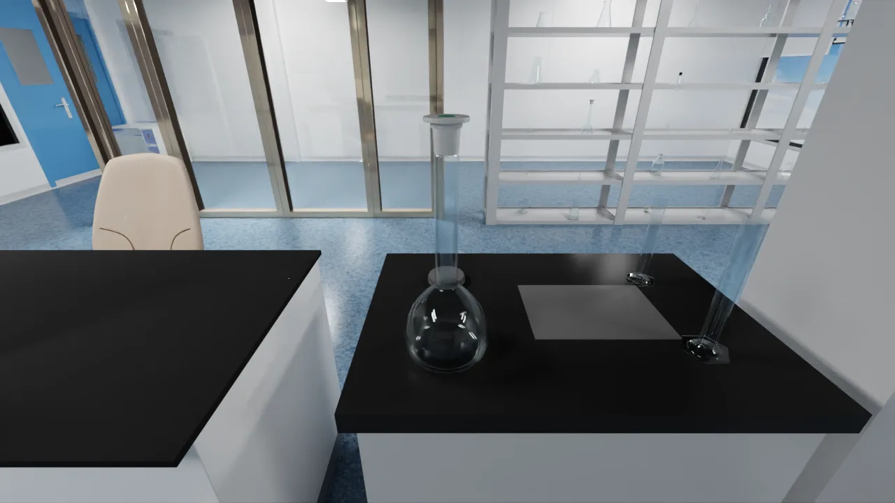

Personal site
Research, systems
and visual work.
The full site is in progress. Project pages are available below.
Selected projects
01
01
Transparent Object Perception
Retrieval-augmented transparent object perception for autonomous laboratories.
View project ↗